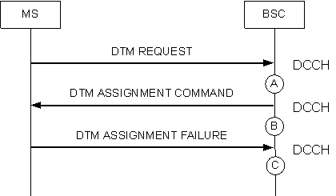

Measurement Point
If the MS does not respond with the DTM assignment message after the BSS sends an uplink DTM ASS CMD message due to various causes, the counter is incremented by one respectively according to the specific cause.
- After the BSC receives the DTM ASS FAIL message from the MS (see measurement point C), the counter is incremented by one.
- If the start of the INTRAHO CMP timer fails after the BSC sends the uplink DTM ASS CMD message to the MS, the counter is incremented by one.
- If the INTRAHO CMP timer starts and then expires after the BSC sends the uplink DTM ASS CMD message to the MS, the counter is incremented by one.
Figure 1 Failed DTM access procedure in the case of channel reassignment
